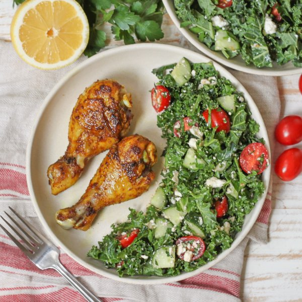

Roasted Moroccan-Spiced Drumsticks with Kale, Parsley & Feta Salad

Prep Time
45 min
Nutrition (per serving)
674.1 kcalCalories
58.6 gProtein
14.7 gCarbs
42.2 gFat
Full nutrition table
| Calories | 674.1 kcal |
| Total fat | 42.2 g |
| Saturated fat | 12.6 g |
| Trans fat | 0.5 g |
| Cholesterol | 286 mg |
| Sodium | 593.5 mg |
| Carbohydrates | 14.7 g |
| Fiber | 3.8 g |
| Sugars | 5.3 g |
| Protein | 58.6 g |
| Potassium | 1175.3 mg |
| Calcium | 267.1 mg |
| Iron | 5.2 mg |
| Vitamin A | 928.3 IU |
| Vitamin C | 85.1 mg |
| Vitamin D | 10.2 IU |
Cookware
Ingredients
- 2 ½ lbchicken drumsticks
- 1 (4 oz) pkgcrumbled feta cheese
- 1English cucumber
- 2 clovesgarlic
- 1 pintgrape tomatoes
- 1 small bunchItalian (flat-leaf) parsley
- 1 bunchkale
- 1lemon
- black pepper
- cayenne pepper
- cinnamon, ground
- coriander, ground
- cumin, ground
- extra virgin olive oil
- paprika
- salt
- turmeric, ground
Steps
- Preheat the oven to 450°F. Line a baking sheet pan with aluminum foil to make cleanup easier (optional).
- Peel and mince garlic; place in a medium bowl, along with oil and spices, and whisk to combine the marinade.2 cloves garlic
4 tsp extra virgin olive oil
1 ½ tsp cumin, ground
1 ½ tsp coriander, ground
1 tsp salt
½ tsp paprika
½ tsp turmeric, ground
¼ tsp cinnamon, ground
⅛ tsp cayenne pepper - Add chicken to the bowl with the marinade and turn to coat. Transfer drumsticks to the baking sheet, spreading them out in a single layer.2 ½ lb chicken drumsticks
- Place baking sheet in the oven (it doesn't have to be fully heated) and roast, turning once, until the chicken is golden brown and cooked through, 30-35 minutes. Remove from oven.
- Meanwhile, wash and dry the fresh produce.1 lemon
1 bunch kale
1 small bunch Italian (flat-leaf) parsley
1 English cucumber
1 pint grape tomatoes - Juice lemon into a clean medium bowl. Add oil, salt, and pepper; whisk to combine the dressing.4 tsp extra virgin olive oil
½ tsp salt
½ tsp black pepper - Fold kale leaves in half lengthwise and slice off the stems. Finely chop leaves and add to the bowl with the dressing; using your hands, massage kale with the dressing until wilted, 1-2 minutes.
- Shave parsley leaves off the stems; discard stems and mince the leaves. Add to the bowl.
- Trim and quarter cucumber lengthwise, then cut crosswise into ¼-inch thick pieces; add to the bowl.
- Halve tomatoes; add to the bowl, along with feta, and toss to combine the salad.1 (4 oz) pkg crumbled feta cheese
- To serve, divide chicken and salad between plates. Enjoy!